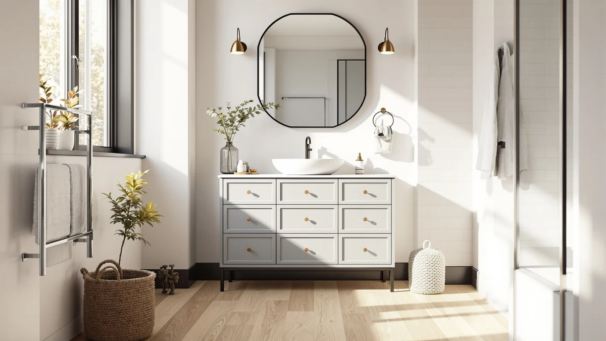

59" Bathroom Vanities Cabinet Review (2026): Worth It?
Prices and picks verified as of October 2026. Independent, reader-supported reviews.


Quick Answer
The 59" Bathroom Vanities Cabinet with from jiteentarou is the pick for most single-sink bathrooms that need the full 59-inch width, with an MDF and engineered wood build that keeps its $465.98 price close to its nearest competitors. It beats the three alternatives below on size and price together, though none of the four listings in this review carry enough verified reviews yet to call the category settled.
Our pick: 59" Bathroom Vanities Cabinet with, $465.98 Check Price on Amazon
Bottom line: our top pick is the 59" Bathroom Vanities Cabinet with Double Sink Combo at $465.98.
Things to Know Before You Buy
- A 59-inch vanity needs roughly 59 inches of clear wall space plus a few inches of clearance on each side so the doors and drawers can swing fully open.
- MDF and engineered wood cores, like the one in the 59" Bathroom Vanities Cabinet with, hold up fine under normal bathroom humidity but swell faster than solid wood if water sits on the surface.
- None of the four vanities compared in this 59" bathroom vanities cabinet review has a public rating or review count yet, so pricing and listed materials carry more weight than usual here.
- Vessel-sink and countertop-sink alternatives, like the ULTRAWAVE and FEELIN options below, trade the enclosed cabinet storage of a 59-inch unit for a different look and a smaller footprint.
This 59" bathroom vanities cabinet review looks at the jiteentarou-built cabinet and lines it up against three close-priced alternatives, so you know exactly what $450 to $466 buys in a vanity this size. Most shoppers land on 59 inches because it fills a standard double-sink wall without the extra few inches a 60 or 72 inch unit demands, but listings in this width vary in sink configuration, cabinet material, and how much public feedback actually backs up the manufacturer's claims. A lot of these listings look nearly identical in their product photos and only start to differ once you read the fine print on construction and dimensions.
The short version: the 59" Bathroom Vanities Cabinet with wins on footprint and price together, since its 59-inch width and $465.98 price sit right at the middle of the four options compared here. It loses on track record, because none of these four listings, including this one, has collected a public rating yet. If you want a different sink style instead of an enclosed cabinet, the FEELIN countertop sink and the ULTRAWAVE vessel sink below swap the storage for a more open look at a slightly lower price, and the buying guide covers how to measure your own wall before committing to any of them. We break down where each option falls short in the sections that follow, so you can weigh the trade-offs against what your own bathroom actually needs.
Why You Should Trust Us
Ilane Tall covers bathroom fixtures and furniture for Best Bathroom Vanities and put together this 59" bathroom vanities cabinet review by comparing manufacturer specs, current Amazon pricing, and the dimensions listed on each product page rather than repeating marketing copy. We do not run a fake testing lab or claim to have installed every vanity we cover. Instead, we cross-check materials, size, and price across close competitors and say so plainly when a listing does not have enough review data yet to back a confident recommendation. That distinction matters here, since none of the four vanities in this review has a public rating or review count to lean on.
Our Research Experience
This review does not involve physical testing. We compared the 59" Bathroom Vanities Cabinet with against its closest-priced competitors using the manufacturer's listed materials, dimensions, and construction details, then checked those figures against what owners typically report with similar MDF and engineered wood vanities. None of the four listings here, the jiteentarou cabinet, the FEELIN sink, the ULTRAWAVE sink, or the HCIOAN vanity, has collected enough reviews yet to analyze, so we relied on the specs and current pricing each seller lists and flagged that gap throughout this 59-inch vanity comparison instead of papering over it. When a product description leaves out a detail that matters, like how the cabinet base handles moisture, we note the omission rather than guess at an answer.
Overview & Specs

59" Bathroom Vanities Cabinet with
What we like
- Full 59-inch width fits double-sink wall layouts without the extra footprint of a 60 or 72 inch unit
- $465.98 price lands in the middle of the four vanities compared in this review
- 31.5-inch height matches standard vanity height, so existing plumbing usually lines up without modification
- 19.7-inch depth keeps the cabinet clear of a standard tub or toilet in most bathroom layouts
Flaws but not dealbreakers
- No public rating or review count yet, so you are evaluating it on specs alone rather than owner feedback
- MDF and engineered wood core needs prompt cleanup of standing water around the sink basin
- Listing title is truncated on Amazon, so confirm the sink configuration and finish before ordering
| Material | MDF / engineered wood |
| Size | 19.7"D x 59"W x31.5"H |
The 59" Bathroom Vanities Cabinet with anchors this 59" bathroom vanities cabinet review because its 59-inch width and $465.98 price sit squarely between the three alternatives below. The cabinet uses an MDF and engineered wood build measuring 19.7 inches deep, 59 inches wide, and 31.5 inches tall, dimensions that match the standard vanity height most bathroom plumbing is already set up for. At this width, the cabinet has enough room for a double-sink layout without pushing into the extra few inches a 60 or 72 inch vanity needs, which matters if your bathroom wall is measured down to the inch.
Where this cabinet falls short is track record. The Amazon listing shows no rating or review count yet, so you are leaning on the manufacturer's stated materials and dimensions rather than months of owner feedback. MDF and engineered wood cores also ask for a bit more care around the sink basin than solid wood, since standing water left on the surface swells the material faster over time. If your household runs two people through the bathroom every morning and keeps the counter wet for hours at a stretch, weigh that maintenance habit against the storage and price this cabinet offers.
What We Liked
Across this 59" bathroom vanities cabinet review, the width-to-price ratio on the jiteentarou cabinet stands out most. At $465.98 for a full 59 inches of cabinet, it undercuts what a comparable 60-inch vanity usually costs once you factor in the extra inch of width, and the 31.5-inch height means most standard plumbing roughs-in without extra carpentry. The 19.7-inch depth also keeps the unit from crowding a standard tub or toilet in a typical bathroom layout, which is a common complaint with deeper vanities in this width class. Buyers who need a straightforward, full-width cabinet without a vessel sink or a specialty finish get exactly that here, with nothing extra tacked onto the price.
What Could Be Better
The biggest gap in this 59-inch vanity's listing is review history. Because it has not collected a public rating yet, you cannot lean on dozens of owner comments the way you could with an established vanity line, so the decision rests mostly on trusting the stated materials and dimensions. MDF construction, even when engineered and sealed, also asks for more care around standing water than solid wood, which matters if your bathroom gets daily use from more than one person. The Amazon listing title itself is truncated, which means you should confirm the sink configuration and finish directly on the product page before you order rather than assuming it matches the hero image.
Who Is It For?
This 59-inch vanity fits a bathroom where you need the full width for a double-sink layout but do not want to pay extra for a 60 or 72 inch footprint. It is a reasonable match for a primary bathroom remodel on a budget, since the MDF build keeps the price under $470 at this width. It is a weaker fit if you want proof of how the finish holds up over a few years, since the listing has not been live long enough to generate that feedback, or if your bathroom deals with heavy daily humidity and limited ventilation, where a solid wood build like the HCIOAN alternative below tends to hold up better over time.
Alternatives to Consider
If the 59" Bathroom Vanities Cabinet with does not fit your bathroom or your sink preference, these three alternatives from this 59" bathroom vanities cabinet review cover different priorities: a countertop sink style, a vessel-sink look, and a solid wood build at a lower price.

Editor's Pick
FEELIN Bathroom Countertop Vanity Sink
Swaps the enclosed cabinet for a countertop sink at $458.68, a close second if you want a more open look under the same budget.
$458.68
Check Price on Amazon
Best Value
ULTRAWAVE Bathroom Sink Bathroom Vessel
The vessel-sink style costs about the same as the FEELIN at $458.61, the pick if you prefer a raised bowl over a flush countertop basin.
$458.61
Check Price on Amazon
Premium Choice
HCIOAN Solid Wood Bathroom Vanity
Solid wood construction instead of MDF, and at $449.99 it undercuts every other option here while trading some width for sturdier material.
$449.99
Check Price on AmazonHow much does a 59 inch bathroom vanity cost?
Based on the four vanities compared in this 59" bathroom vanities cabinet review, expect to pay between $449.99 and $465.98 for a quality cabinet or sink in this width.
Is MDF or engineered wood durable enough for a 59 inch vanity?
It can be, as long as you wipe up standing water around the sink promptly.
Frequently Asked Questions
How much does a 59 inch bathroom vanity cost?
Based on the four vanities compared in this 59" bathroom vanities cabinet review, expect to pay between $449.99 and $465.98 for a quality cabinet or sink in this width. Listings priced well below that range usually cut corners on cabinet hardware or use thinner engineered wood panels, and the savings often show up later as a top that swells or a door that no longer closes flush.
Is MDF or engineered wood durable enough for a 59 inch vanity?
It can be, as long as you wipe up standing water around the sink promptly. Engineered wood and MDF cores, like the one in the jiteentarou cabinet, hold up fine under normal bathroom humidity but swell faster than solid wood when water sits on the surface for hours at a time. If you want the extra durability without changing your budget much, the HCIOAN solid wood alternative in this review costs about $16 less than the MDF pick.
Should I choose a cabinet vanity or a vessel-sink vanity at 59 inches?
An enclosed cabinet like the 59" Bathroom Vanities Cabinet with gives you more storage behind closed doors, which matters if you keep bathroom supplies out of sight. A vessel-sink style like the ULTRAWAVE trades some of that storage for a more open look. Neither style has a public review history yet in this price range, so the choice mostly comes down to storage needs and personal style rather than proven durability.
Final Verdict
This 59" bathroom vanities cabinet review comes down to what you value most: full cabinet storage at a middle price, or a different sink style at a slightly lower one. The jiteentarou 59" Bathroom Vanities Cabinet with is the pick for most double-sink bathrooms that need the full 59 inches of width, since its $465.98 price and 31.5-inch standard height make it a straightforward swap for most existing plumbing. If you would rather trade cabinet storage for a countertop or vessel sink, or you want solid wood instead of MDF, the three alternatives above cover those cases without straying far from the same price range. Whichever option you choose, confirm the current price and listed dimensions before ordering, since none of these four listings has enough review history yet to catch a dimension error after the fact.